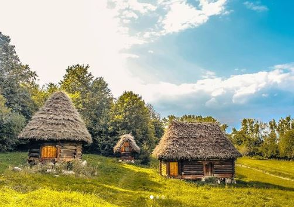
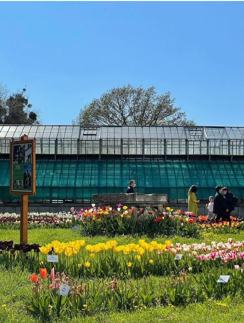
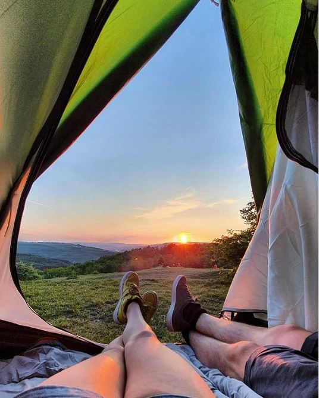
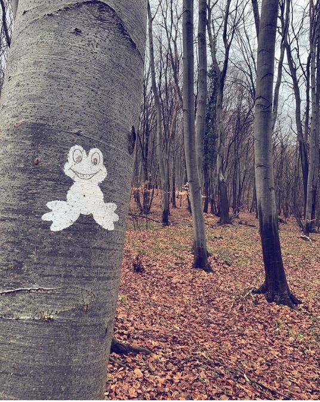
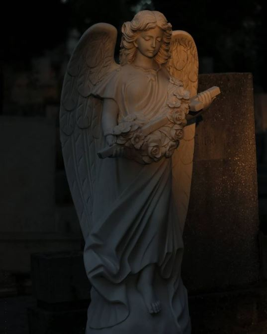

Cel mai probabil, nu sunt singura care se bucură de faptul că restricțiile încep să se relaxeze și că situația (inter)națională pare ceva mai promițătoare. Chiar și așa, nu e cazul că ne culcăm pe o ureche și trebuie să fim în continuare atenți și să păstrăm distanțarea socială. Iar cum vremea este tot mai plăcută, probabil și tu vrei mai mult ca niciodată să ieși din casă și să te relaxezi în aer liber.
Dar unde să mergi când toată lumea ia cu asalt Parcul Central și Cetățuia? Din dorința de a readuce la lumină și alte colțuri uitate din oraș, dar și pentru că foarte lume frecventează aceleași locuri care devin supraaglomerate, astăzi vin cu câteva idei de locuri outdoor mai puțin aglomerate în Cluj unde poți petrece timp în mijlocul naturii.
Primul de pe ordinea de zi este Parcul Etnografic Naţional ,,Romulus Vuia”. Puțini știu faptul că este primul muzeu în aer liber din România și că a fost înființat în 1929 de către etnograful al cărui nume îl poartă azi. Cu o suprafață inițială de 72 de hectare, în urma celui de Al Doilea Război Mondial parcul pierde multe dintre exponatele sale, după care este nevoit să-și reducă considerabil dimensiunile. Se află într-o zonă mai liniștită a orașului și este o lecție de istorie captivantă pentru cei mici, care vor pune cu siguranță multe întrebări. Îți recomand să te înarmezi de acasă cu o sticlă de apă și mult entuziasm. Te așteaptă mai multe gospodării țărănești, troițe, trei biserici, tot felul de prese și multe alte instrumente esențiale vieții de altădată de la sat. A, da, te vei întâlni și cu un blănos foarte prietenos, dar pentru a afla despre ce animăluț este vorba, trebuie să mergi chiar tu și să descoperi singur. Orarul de vizită este valabil de miercuri până duminică și diferă în funcție de perioada anului. În lunile în care funcționăm după ora de iarnă, din octombrie, accesul se face între 9-16, cu ultima intrare la ora 15, iar în perioada orei de vară, începând cu luna martie, programul este de la ora 9 la ora 18, cu ultima intrare permisă la ora 17. Prețul biletelor este unul destul de mic, 6 lei de persoană în prezent, iar elevii, studenții și pensionarii beneficiază de reduceri. Ca să te asiguri că nu ai ratat niciun obiectiv, poți lua de la casa de bilete o hartă a parcului sau să o deschizi de pe telefon pe cea online. Pe site vei găsi și câteva informații despre ce autobuz trebuie să iei dacă vrei să-ți lași mașina acasă. Periodic se organizează Târgul Satului, dar și alte câteva evenimente bazate pe meșteșug și produse locale. Ca să fii mereu la curent cu ce se mai pregătește, te sfătuiesc să urmărești pagina de Facebook a Parcului Etnografic. Dacă te-am convins să faci o vizită și vrei să îți faci o idee despre exponate, dar și câteva idei despre acestea, le poți descoperi aici.
Un must see în perioada în care pomii abia înfloresc este, desigur, Grădina Botanică ,,Alexandru Borza”. Deși face parte din categoria spațiilor verzi cunoscute, numărul vizitatorilor este unul mai controlat, ceea ce o face potrivită pentru o plimbare în aer liber în următorul weekend. Istoria locului este mai veche decât poate ne închipuim. Prima grădină botanică academică a fost gestionată de către August Kanitz pe teritoriul unui conte. În 1900 este achiziționată o parte din teritoriul unde funcționează astăzi grădina, dar începerea Primului Război Mondial dă peste cap deschiderea acesteia. Așa că, abia în 1919, când Alexandru Borza devine responsabil de a finaliza grădina, lucrurile se pun cu adevărat în mișcare, ca în 1925 să aibă loc deschiderea oficială a acesteia. La acea dată erau deja prezente o mare parte din atracțiile pe care le putem vedea chiar și astăzi. În prezent, la Grădina Botanică ,,Alexandru Borza” întâlnim cel mai mare Herbar din România, adică o colecție mare de plante care sunt conservate prin uscare și care sunt păstrate o perioadă îndelungată de timp. Poți să o vizitezi și cu prietenii, dar mai ales cu cei mici care vor avea suficient spațiu pentru noile lor descoperiri. Cert este că, indiferent de vârstă, multitudinea culorilor și texturilor de aici te vor încânta până peste poate. Eu zic să mergi mai repede, până nu trece de tot sezonul lalelelor. Nu ai vrea să ratezi un asemenea moment al grădinii. Din păcate, în această perioadă serele și muzeul sunt închise. Însă restul Grădinii botanice este deschis de luni până duminică între orele 09-20, iar ultimele bilete de acces se cumpără la ora 19. Prețul unui bilet pentru adulți este 7 lei, iar pentru elevi, studenți și pensionari biletul ajunge doar 4 lei. Mai mult decât atât, studenții de la Universitatea Babeș-Bolyai se bucură de intrare gratuită dacă prezintă la casa de bilete carnetul de student vizat pe anul în curs. Iar dacă vrei să fii pus la curent despre evenimentele care vor urma și alte beneficii pe care le poți avea, te invităm să urmărești și pagina de Facebook a Grădinii Botanice.
De la un cititor #clujlife am primit ca recomandare și Poienița de la Sf. Ion. Este situată în Pădurea Făget și poți ajunge aici venind pe Drumul Sfântul Ioan, după care faci dreapta pe Aleea Gălbiori. Dar pentru a te orienta mai ușor și pentru a vedea cum poți ajunge aici, te poți uita pe această hartă. Un picnic aici cred că ar întrecere restaurantele care tind să se aglomereze tot mai mult în această perioadă, cu cei mai entuziaști dintre noi. Așa că dacă vrei să iei un prânz liniștit cu cei dragi ție, cred că mai bine te-ai apuca să-ți pregătești coșul cu bucate. Nu uita de pătură, protecție solară și apă rece. Iar dacă vrei să scapi de gătit sau de pregătit sandvișuri în weekend, poți cumpăra mâncarea de la restaurantul preferat în regim take away. Poate îți place sportul și ești pasionat de mișcare în adevăratul sens al cuvântului. În acest caz, poți să ajungi aici cu bicicleta, iar unul dintre colegii noștri a scris despre 3 trasee până în Făget, toate pe drumul Sfântul Ioan. Așa că dacă bicla te așteaptă după o iarnă lungă, mai bine ai lua-o cu tine. E timpul să plecați împreună către o nouă aventură, în care te vei bucura de liniștea naturii.
Traseul Broscuța (sau Traseul Broscuțelor) îți sună cunoscut? Dacă nu, îți pot spune că se află tot în Pădurea Făget și că este este un traseu foarte ușor de parcurs prin pădure, mai ales pentru cei mici. Mai este cunoscut și sub denumirea de Poteca Misterele pădurii, dar clujenii îl numesc mai simplu după tematica traseului. De-a lungul acestuia, pe copaci, sunt pictate broscuțe albe care să-ți marcheze drumul. Lungimea acestuia este de aproximativ 2,7 km. Din loc în loc vei găsi și câteva panouri informative, de unde poți afla mai multe, atât tu, cât și cel mic, despre pădurea în care vă aflați și despre tainele acesteia. Vei porni de pe strada Cerbului, iar dacă vei duce traseul la bun sfârșit, vei ajunge aproape de Observatorul Astronomic. Poți vedea întreg traseul chiar aici.
Cu riscul de a părea puțin sumbră pentru această ultimă locație, trebuie să menționez că Cimitirul Central (sau Cimitirul Hajongard) din Cluj este catalogat drept monument istoric, iar în sezonul cald e una dintre cele mai spectaculoase arii verzi ale orașului. Și da, putem spune că este cu adevărat un loc mai puțin popular. Pentru unii dintre noi, cel puțin :). În secolul XVI, după o epidemie cruntă de ciumă, principalul cimitir al orașului devenea neîncăpător. Astfel, se înființează actualul Cimitir Central. Printre cei trecuți în neființă care se odihnesc aici se află și câteva personalități istorice ale zonei, cum ar fi Miklós Bánffy, Iuliu Haţieganu sau Emil Racoviță, iar cea mai veche piatră funerară datează din anul 1599. Cimitirul poate să fie o locație interesantă pentru fotografii, mai ales pentru că vei găsi o diversitate de elemente arhitecturale, care sunt cu adevărat interesante. De altfel, dacă vrei să tranzitezi orașul din Observator până în Centru și să o iei la pas printr-un loc mai liniștit este, cu siguranță, o alternativă mult mai bună s-o scurtezi prin cimitir, decât să te înghesui prin autobuze sau să aștepți în trafic.
Iar dacă nu te încântă variantele de mai sus, poți opta oricând pentru o plimbare în parcurile de cartier, care sunt cu mult mai puțin aglomerate. Găsești o listă cu o parte din ele aici. Chiar dacă unele dintre acestea sunt, poate, cu dimensiuni mai mici sau nu au la fel de multe atracții ca exemplele de mai sus, pentru stat în hamac și citit o carte, lenevit la soare, alergat sau pentru plimbat patrupedul cred că sunt destul de potrivite.
La început a fost… nimeni și nimic care să ne vorbească despre viața orașului, despre ce se întâmplă în materie de evenimente și localuri pe plan local, niciun motiv care să ne scoată din casă.
Everyday we’re clujlife(ing). Ieșim din casă, vedem ce se întâmplă, ce mai e nou, ce mai zice lumea, ce-ar mai fi interesant de făcut, și apoi îți povestim și ție. Facem asta din Ianuarie 2008. Prezența aceasta îndelungată ne-a adus destule cunoștințe și curaj încât să abordăm subiecte pe care nu le ”atinge” nimeni. Avem informații pe care nu le găsești în altă parte și acces la mulți oameni din varii domenii.